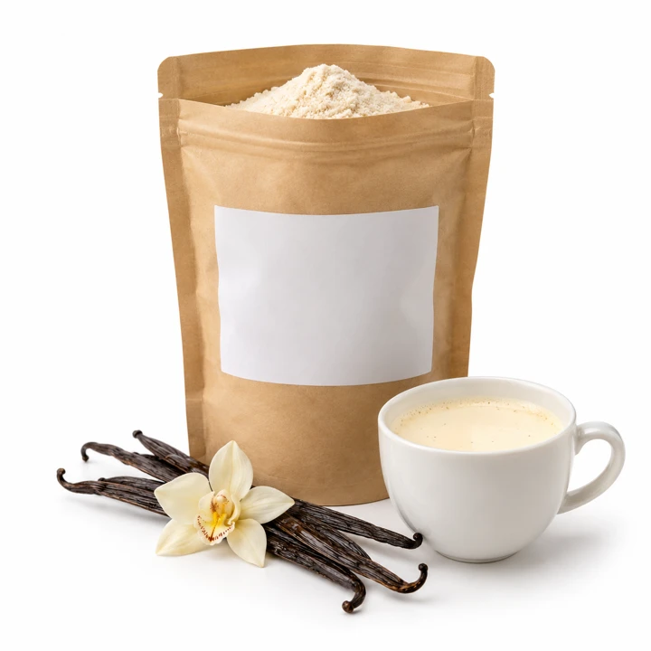

Marley Coffee · Empresas · Cafeterías
¿Café para cafeterías?
¿Qué máquina de café necesita una cafetería profesional?
Ajusta el equipo y el café a la carta, las recetas y el ritmo de atención.
Arma tu propuestaTu oferta · Cafeterías
¿Qué pack de partida puedes revisar?
A tu ritmo de barra: espresso, leche y sabores para tu carta. La máquina Marley se presta en comodato.
Ver máquina, productos y precios

Bar
Espresso profesional con molinillo
100 a 400 tazas al día
En comodato: Marley presta la máquina y tú compras los insumos. Modelo, mínimo mensual y condiciones a confirmar con tu ejecutivo.
Productos del pack
 Café en grano orgánico8 × 907 g$447.920 neto
Café en grano orgánico8 × 907 g$447.920 neto Leche20 × 500 g$185.000 neto
Leche20 × 500 g$185.000 neto Chocolate10 × 1 kg$169.900 neto
Chocolate10 × 1 kg$169.900 neto
Vainilla10 × 1 kg$169.900 neto Vaso 9 + tapa500 de cada uno$94.000 neto
Vaso 9 + tapa500 de cada uno$94.000 neto- Vaso 14 + tapa500 de cada uno$107.500 neto
Referencia: la cotización completa de Marley del 19-oct-2026, con todas las líneas, suma $1.491.220 neto con kit y filtro.
Condiciones a confirmar
- Compra mínima mensual: a confirmar.
- Plazo de entrega: a confirmar.
- Compatibilidad de insumos con la máquina: a confirmar.
Precios netos referenciales, de la cotización de Marley del 19-oct-2026. Los confirma tu ejecutivo.
¿Cómo evalúas y comparas una solución para cafeterías?
Registra recetas, dosis y demanda por hora antes de comparar capacidad. Compara carta, ritmo de preparación y condiciones del local.
Ver el método de evaluación
Ver los pasos de evaluación
- Registra recetas y dosis: Separa las bebidas y anota la dosis real que ocupa cada receta.
- Revisa capacidad y flujo: Considera la demanda por hora, quién prepara las bebidas, espacio, conexiones y limpieza.
- Confirma compatibilidad: Contrasta los productos y la ficha del equipo con tu operación antes de acordar una propuesta.
Compatibilidad, disponibilidad, servicios, soporte y condiciones comerciales se confirman para cada operación en una propuesta.
Ver los puntos de comparación
| Carta | Bebidas, receta y método de preparación. |
|---|---|
| Ritmo | Tazas al día y concentración por hora. |
| Local | Espacio, conexiones, limpieza y responsables. |
¿Qué preguntas conviene resolver antes de elegir?
Aclara tamaño del equipo, perfil del café y consumo mensual estimado.
Ver preguntas y guías relacionadas
Ver preguntas y respuestas frecuentes
¿Qué máquina necesita una cafetería pequeña?
No existe un tamaño universal: compara carta, tazas en hora punta, espacio, conexiones y operación con la ficha del equipo.
¿Qué café en grano sirve para mi cafetería?
Define el perfil y método que busca tu carta; confirma disponibilidad y compatibilidad con el proveedor.
¿Cómo estimo el consumo mensual?
Calcula cada receta con tus tazas diarias, días de atención y gramos por taza; luego suma los resultados.